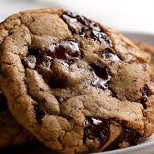

Home
Choco-Chunk Cookies

Description
These cookies are gooey chocolatey goodness.
Ingredients:
- 2 cups all-purpose flour
- 1 teaspoon baking soda
- ½ teaspoon salt
- 1 cup shortening
- ½ cup white sugar
- ¾ cup packed brown sugar
- 1 egg
- 2½ teaspoons vanilla extract
- 1⅓ cups semisweet chocolate chips
- 1 cup chopped hershey bar
Steps:
- Combine flour, baking soda, and salt. Set aside.
- In a large bowl , cream the vegetable shortening and the two sugars. Beat in the egg and vanilla. Gradually blend in the dry ingredients.
- Fold in the chocolate chips and the hershey bar chunks. Cover and chill for 2 to 3 hours.
- Preheat oven to 350 degrees F (175 degrees C).
- Drop cookie by teaspoonfuls onto shiny lightly greased cookie sheets. Bake 10-12 minutes and transfer to wire racks to cool. Take out of oven when lightly colored - they will darken after being taken off cookie sheet.